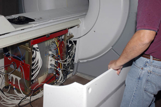
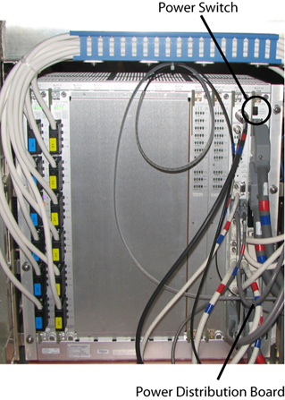
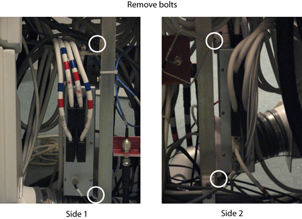

Operating Documentation
Direction 5670000, Rev# 1
Optima MR450w 1.5T Service Methods
Module Version 5.0, Version Date 9/30/09
Operating Documentation |
| Required Persons | Preliminary Reqs | Procedure | Finalization |
|---|---|---|---|
| 1 | Not Applicable | 30 mins | 30 mins |
| Item | Qty | Effectivity | Part# | Manufacturer | |
|---|---|---|---|---|---|
| Nonmagnetic Service Tool Kit | 1 | - | 5112581 | - | |
| Item | Qty | Effectivity | Part# | Manufacturer | |
|---|---|---|---|---|---|
| 16-Channel Re-route Box | 1 | - | See FRU Manual | - | |
| 32-Channel Re-route Box | 1 | - | See FRU Manual | - | |
| ||||
| Strong Magnetic Field! | ||||
| The box has no ferrous material and will not be attracted to the magnet, but eddy currents set up by the strong magnetic field interacting with the box can make it difficult for one person to handle. | ||||
| When removing and or replacing the Re-route Box from the rear pedestal, keep the box as far away from the magnet as possible. |
Lock Out/Tag Out (LOTO) the Systems Cabinet. Refer to LOTO for RF and PEN Cabinets and Magnet Room Electronics.
Remove the side covers from the rear pedestal.
Illustration 1: Removing Side Covers

Turn off the Power Switch on the Power Distribution Board shown in Illustration 2.
Illustration 2: Power Switch on Power Distribution Board

Remove all cables connected to the Re-route Box (top, side 1 and side 2). Record the cable locations and run numbers for reinstallation.
Remove the four (4) bolts holding the Re-route Box to the rear pedestal. (See Illustration 3.)
Illustration 3: Re-route Box (Side 1 and 2)

While carrying the box out of the magnet room, make sure to stay as far away from the magnet as possible.
| ||||
| Strong Magnetic Field! | ||||
| The box has no ferrous material and will not be attracted to the magnet, but eddy currents set up by the strong magnetic field interacting with the box can make it difficult for one person to handle. | ||||
| When removing and or replacing the Re-route Box from the rear pedestal, keep the box as far away from the magnet as possible. |
While carrying the new box into the magnet room, make sure to stay as far away from the magnet as possible.
Reinstall the four (4) bolts to secure the Re-route Box to the rear pedestal. (See Illustration 3.)
Reinstall all cables previously connected to the Re-route Box (top, side 1 and side 2).
Turn on the Power Switch on the Power Distribution Board shwon in Illustration 2.
Replace the side covers on the rear pedestal.
Remove LOTO from the Systems Cabinet.
Perform a validation scan.